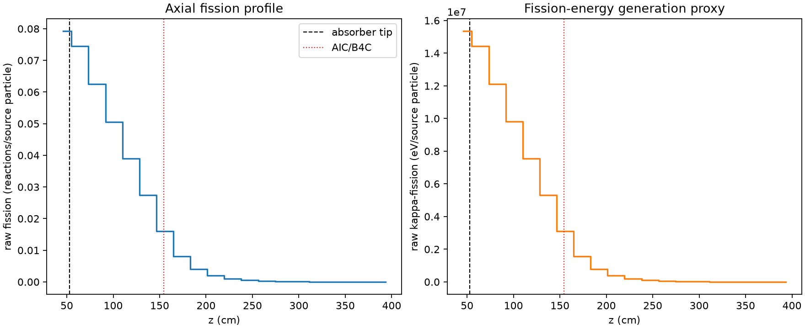
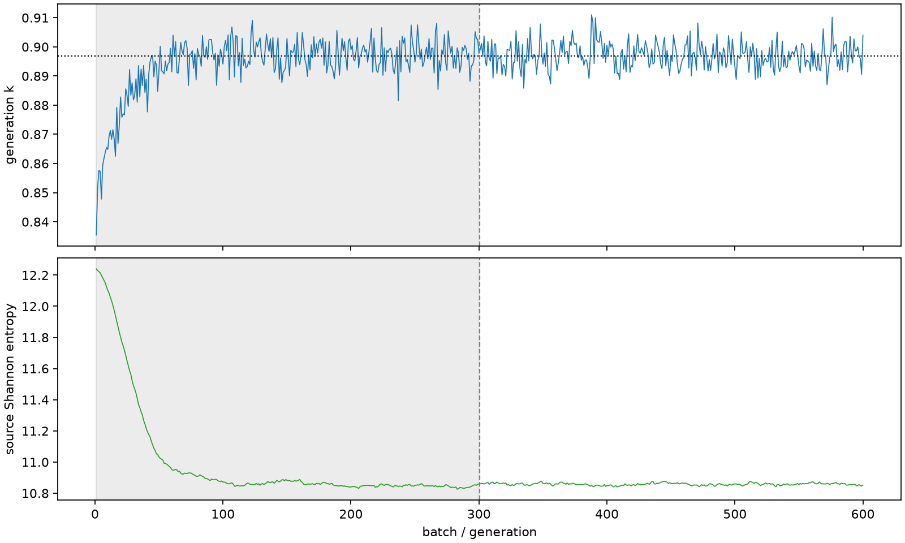

| field | value |
|---|---|
| experiment | V2-ADAPTIVE_01-0008 |
| k | 0.8969390699175749 |
| MC standard error | 0.00018761989660804327 |
| seconds | 946.6281550599961 |
| acceptance | not_assessed |
| convergence | review_required |
Completed is output integrity only; physical and statistical review required. Zero tallies do not prove zero production or zero uncertainty.
| diagnostic | value |
|---|---|
| geometric fuel voxels | 5280 |
| zero fission tally voxels | 3 |
| low signal fuel voxels | 1435 |
| low signal fission share | 0.0002688606386896324 |
| low signal kappa share | 0.00026891261831080414 |
| important fission share | 0.9500780036374463 |
| previous filter included | 3845 |
| duration estimate s | 1562.5173488400023 |
| actual minus estimate s | -615.8891937800063 |
| fission relative MC error | statistics |
|---|---|
| all_geometric_fuel | {"voxels": 5280, "positive_mean_voxels": 5277, "zero_mean_voxels": 3, "undefined_relative_error_voxels": 3, "median": 0.043678421801703386, "p95": 0.6709478987083627, "maximum": 1.0000000000000002} |
| low_signal | {"voxels": 1435, "positive_mean_voxels": 1432, "zero_mean_voxels": 3, "undefined_relative_error_voxels": 3, "median": 0.40234717360436834, "p95": 0.9230621389024198, "maximum": 1.0000000000000002} |
| important_95pct | {"voxels": 1809, "positive_mean_voxels": 1809, "zero_mean_voxels": 0, "undefined_relative_error_voxels": 0, "median": 0.007474196652429766, "p95": 0.01337027826665563, "maximum": 0.01562723165533602} |
| outside_previous_filter | {"voxels": 1435, "positive_mean_voxels": 1432, "zero_mean_voxels": 3, "undefined_relative_error_voxels": 3, "median": 0.40234717360436834, "p95": 0.9230621389024198, "maximum": 1.0000000000000002} |
| kappa_fission relative MC error | statistics |
|---|---|
| all_geometric_fuel | {"voxels": 5280, "positive_mean_voxels": 5277, "zero_mean_voxels": 3, "undefined_relative_error_voxels": 3, "median": 0.04360614527493618, "p95": 0.6702839551931166, "maximum": 1.0000000000000002} |
| low_signal | {"voxels": 1435, "positive_mean_voxels": 1432, "zero_mean_voxels": 3, "undefined_relative_error_voxels": 3, "median": 0.4017620101663242, "p95": 0.9235896187495551, "maximum": 1.0000000000000002} |
| important_95pct | {"voxels": 1809, "positive_mean_voxels": 1809, "zero_mean_voxels": 0, "undefined_relative_error_voxels": 0, "median": 0.007462438524149843, "p95": 0.013347345001514117, "maximum": 0.015607497527649025} |
| outside_previous_filter | {"voxels": 1435, "positive_mean_voxels": 1432, "zero_mean_voxels": 3, "undefined_relative_error_voxels": 3, "median": 0.4017620101663242, "p95": 0.9235896187495551, "maximum": 1.0000000000000002} |
| axial bin | fission share | kappa-fission share |
|---|---|---|
| 1 | 0.21672594317349356 | 0.21668949841300836 |
| 2 | 0.20369246356053117 | 0.20369993247566545 |
| 3 | 0.17098866112534797 | 0.17099533988932036 |
| 4 | 0.13844146070403954 | 0.13844668748792366 |
| 5 | 0.1067400769350754 | 0.10674414441240718 |
| 6 | 0.07511860705033045 | 0.07512160801541373 |
| 7 | 0.04371361439074302 | 0.04371721939996866 |
| 8 | 0.022042880964276628 | 0.02204603340404475 |
| 9 | 0.011217561116416214 | 0.011219042801275173 |
| 10 | 0.005632738866157254 | 0.005633640006658597 |
| 11 | 0.002843380144129955 | 0.0028438188856494775 |
| 12 | 0.0013968968306647402 | 0.0013970998206244373 |
| 13 | 0.0007157796478715223 | 0.000715875589455052 |
| 14 | 0.00035888725177363743 | 0.0003589388332952678 |
| 15 | 0.00018319933979402668 | 0.0001832337672497665 |
| 16 | 9.508439188387398e-05 | 9.510132882265951e-05 |
| 17 | 5.064355672921624e-05 | 5.065296864584794e-05 |
| 18 | 2.7780107638743308e-05 | 2.7785781709234712e-05 |
| 19 | 1.1870214570850662e-05 | 1.1875274367699493e-05 |
| 20 | 2.4706285322575237e-06 | 2.4714444947394394e-06 |
Histories include the inactive-to-active transition at batch 300. kappa-fission approximates fission energy production, not total heat deposition.

